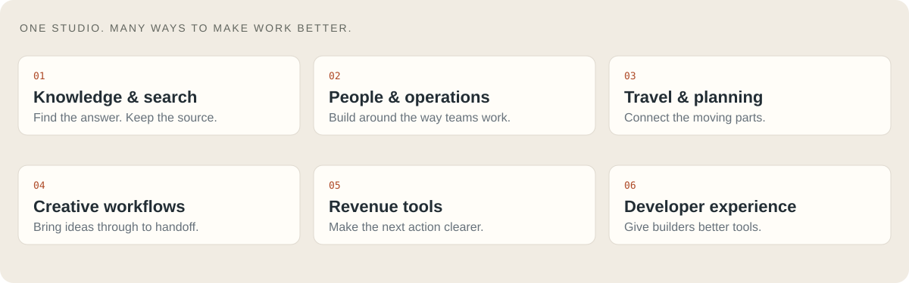
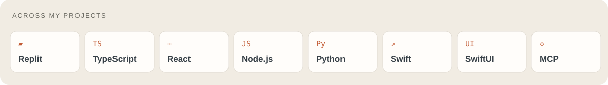

What I build / Selected work / How I work / The workbench
Ciao, I'm Luca.
I'm the AI Chief of Staff at Replit, based in San Francisco. I lead AI Studio, where I work with teams to turn the way they actually work into software built around them.
My work runs from the first conversation about a problem to the product, the rollout, and the people using it. I build with AI, care deeply about the interface, and stay involved after the demo.
The question I keep coming back to: what would we build if we didn't have to accept the tools we inherited?
What I build

Company knowledge that is easier to find. Internal tools that fit the team. Creative and operational workflows that connect. Alongside that work, I explore native apps, personal knowledge systems, automotive software, and new ways to work with agents.
Selected work

Grid · Internal tools, built for the team. An employee hub bringing documents, an org chart, and AI-assisted answers into one place. Publicly showcased by Replit. See the story ↗
Inside the idea: make company knowledge usable
The starting point was information spread across Google Drives. The opportunity was to give employees a useful front door: shared resources, a view of the organization, and an assistant that could help answer everyday questions.
It's the kind of work I love: start with a real friction point, build around the people experiencing it, and connect the pieces into something they can use.

A desktop in the browser · A test of what's possible. A macOS-inspired web environment with developer tools, connected services, and an AI assistant that interacts with the environment. Built with Replit Agent and shared as a public demo. Watch the walkthrough ↗
Inside the experiment: beyond a single screen
I wanted to explore how far natural-language software development could go. The demo brings together a desktop, a code editor, a terminal, GitHub connectivity, and voice or text interactions in one browser-based environment.
This is an independent experiment inspired by macOS, not an Apple product. The public walkthrough shows the work; the artwork above is an illustration.
How I work
| Listen | Build | Learn | Enable |
|---|---|---|---|
| Understand the team, the friction, and the data. | Turn the problem into something people can try. | Use real feedback to improve the workflow. | Teach it, hand it off, and keep it useful. |
A little more about the way I build
- Start with the workflow. Spend time with the people who do the work.
- Make the idea tangible. A working prototype makes a better conversation.
- Treat design as part of the product. Clarity, speed, and the small details matter.
- Finish the handoff. Documentation, teaching, ownership, and maintenance belong in the plan.
- Keep the evidence honest. A working demo, a released product, and real adoption are different milestones.
The workbench

My public repositories are a mix of experiments, adaptations, and forks. Much of my day-to-day company work is private. A few corners to explore:
| Explore | Why it's here |
|---|---|
| GT7 simdash | My working copy of a community Gran Turismo telemetry dashboard. Upstream credit: chrshdl/gt7-simdash. |
| PhoneAgent | Exploring agents on personal devices. A fork of rounak/PhoneAgent. |
| Open Deep Research | Exploring research agents and retrieval. A fork of nickscamara/open-deep-research. |
Public GitHub snapshot. Daily refresh is enabled only when this repository is public. Counts include forks and exclude private repositories; they do not measure product adoption.

Connect on LinkedIn ↗ · Follow the experiments ↗ · Explore the code ↗